One of the state of Ohio's greatest buildings is still standing just outside Mansfield: the old State Reformatory. Drive past it and you'll be amazed that such a place exists outside of Transylvania, or someplace dark and gothic like that. No wonder it's been used as a set for four movies (Harry and Walter Go To New York, Tango and Cash, Air Force One, The Shawshank Redemption) and music videos (such as "Awake" by Godsmack; Marilyn Manson has done photography here). Naturally, it's also about as haunted as a single place can be.
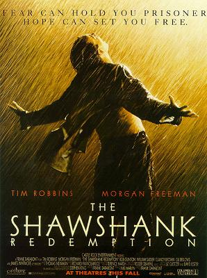
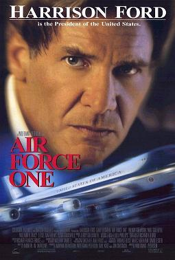
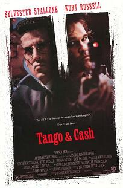
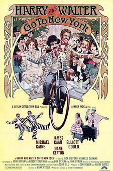
The long history of OSR began in 1861, when the field where it would be built was used as a training camp for Civil War soldiers. It was named Camp Mordecai Bartley to honor the Mansfield man who served as Ohio governor in the 1840s. In 1867 Mansfield was promoted as a candidate for the placement of the new Intermediate Penitentiary. The Intermediate was intended as just that--a halfway point between the Boys Industrial School in Lancaster and the State Penitentiary in Columbus. It would house mostly young, first-time offenders who might still be reformed.
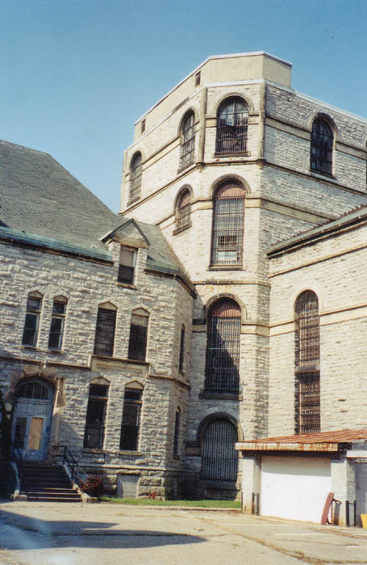
In 1885 Mansfield was officially selected as the site for the new Intermediate, and construction began with Levi T. Scofield as head architect. His design was intended to represent Cathedral style, in the hope that the inmates might be inspired to be better people, or something like that. No matter what his intention, it ended up looking incredible--Dracula's castle in northern Ohio. Work was delayed in 1888-1890, but on September 15, 1896, the building was opened as the Ohio State Reformatory. The first 150 prisoners were brought by train from Columbus and put immediately to work on the prison sewer system and the 25-foot stone wall that surrounded the 15-acre complex. It wasn't until 1910 that the building was completely finished. Today OSR houses the world's largest free-standing cell block--six tiers high.
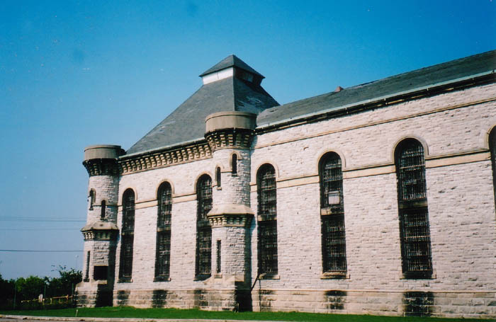
There were a few famous prisoners over the years at OSR. Henry Baker went on to achieve notoriety as a member of the Brinks Gang in the 1950s. Gates Brown, who served a year from 1958 to 1959, would later play baseball for the Detroit Tigers. And in 1989 Kevin Mack, star running back for the Cleveland Browns, did a month on drug charges.
As with any prison, OSR accumulated its horror stories over the years. Two corrections officers lost their lives at OSR; one in 1926, shot to death by a former inmate who was trying to spring his buddy; the other in 1932, beaten to death with a three-foot iron rod in the Hole--slang for solitary confinement.
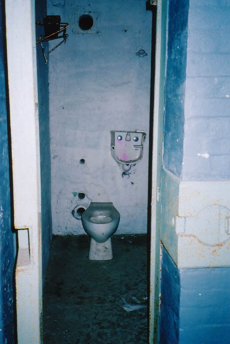
In July of 1948, two inmates released from the Reformatory for "good behavior" displayed some very bad behavior when they went on a killing spree. Robert Daniels and John West, dubbed the "Mad Dog Killers" by the papers, first murdered Columbus tavern owner Earl Ambrose, then stole a car and drove to Mansfield, where they kidnapped OSR farm superintendent John Niebel, his wife, and his twenty-year-old daughter. They murdered all three in a cornfield off Fleming Falls Road. The next day they killed a farmer from Tiffin, whose new bride managed to escape, then shot a truck driver. Two days later the two ex-cons were trapped at a roadblock near Van Wert. West died in a shoot-out with police but Daniels was captured. He bragged about the possibility of dying in the electric chair. The following January he got his wish at the State Pen in Columbus.
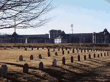
On November 6, 1950, the wife of the prison superintendent apparently knocked a loaded gun off a closet shelf and shot herself through the left lung. The next day she died in the Mansfield hospital. It's possible that the superintendent shot her in order to spare himself the messy legal work and political stigma of a divorce. In February 1959 the superintendent himself died from a heart attack in his office.
An inmate hung himself in his cell in 1955. One burned himself to death in his cell with turpentine and paint thinner stolen from the prison furniture shop. Two convicts were once left in a cramped single-occupancy solitary confinement cell overnight; in the morning only one walked out. The other was stuffed under the bunk. In 1957 a riot put 120 men into the 20 solitary cells for 30 day stints.
Need to add security to a building as big as the Ohio State Reformatory? Want to protect
against intruders or robbers better? Look at great ways to monitor
your home or your own investigation into the unknown! With Surveillance-Video Security
Cameras you can do just that! Surveillance Video has a
wide selection of Security
Video Cameras and even the highest quality Surveillance
Camera System . Whether you are looking for new high tech equipment or
simply want to monitor your home, use products from Surveillance-Video.com
today!
Harry and Walter go to New York and Tango and Cash filmed at OSR while it was still in operation, in 1975 and 1988 respectively. In December of 1990 the last inmates were moved to the new MANCI prison nearby, leaving OSR to the rats and ghosts. The prison was used again in 1993 for the filming of my personal favorite movie, The Shawshank Redemption, and then in 1996 when they shot scenes for Air Force One. Below you can see the part used as the Russian prison in Air Force One.
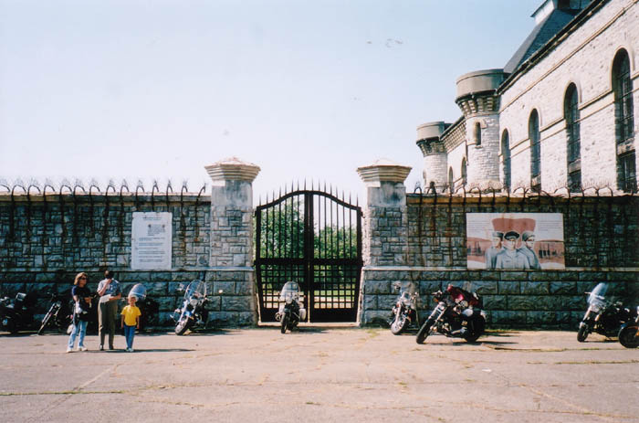
Several ghosts haunt the prison--too many to properly catalogue. The most common occurrence seems to be voices around the old superintendent's quarters, possibly remnants from the "Mad Dog" murders or the questionable suicide of the superintendent's wife. Chris Woodyard reports a wimpy, whiny ghost and a big, burly one, as well as two ghostly men fighting beside the pond out front and numerous apparitions in the old chapel, but she also says one of the ghosts jumped onto her back and asked her to take him out of there, so take that as you will. Nearby, keep an eye out for the ghost of Reformatory Road, which runs beside the prison pond pictured below.
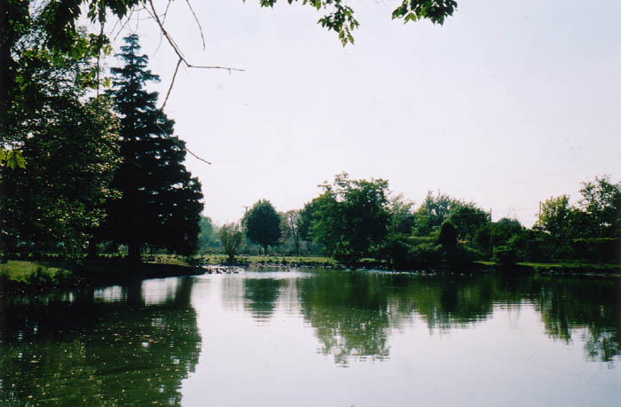
The current status of the Ohio State Reformatory is a mixed blessing. True, it hasn't been demolished so they can build a hockey stadium, unlike some other prisons I could name. An entire preservation society exists for OSR; visit their website at mrps.org. They now own the deed and are in the process of renovating it. They have Sunday tours during warm weather and charge $50 for overnight "spook hunts" around Halloween. During the hunts, participants report a wide variety of phenomena; from what I've read, the most common seems to be the sensation of being touched by invisible hands. The inside, from what I've seen, looks pretty much like any of the other abandoned buildings I've visited--peeling paint, doors off the hinges, broken glass--but now the Mansfield Reformatory Preservation Society charges for tours. So although it's disappointing that the place isn't explorable anymore, it's definitely a good thing that they've saved it.
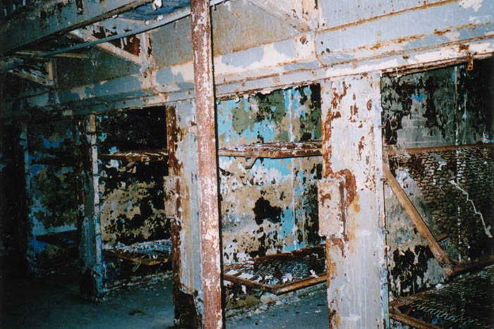
I have made several trips to OSR, the first back when I was 13 and they were filming Shawshank there. My mom and I drove by at a distance and looked at the trailers and boom cranes but didn't see Morgan Freeman or Tim Robbins anywhere. Then, in October of 2000, my then-girlfriend and I drove up from Mt. Vernon, where she was attending school, to have a look at the place one cold and windy Halloween night. They had just shut down from a Halloween tour--there were actual carnival-style hot dog stands out front--and the last people were leaving when we got out and walked around and snapped a few pictures.
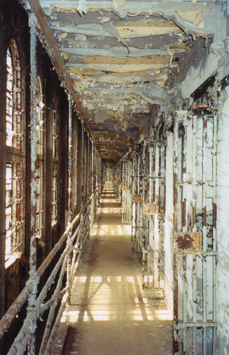
But it wasn't until October of 2002 that I finally made it inside. A subsequent girlfriend and I bought tickets and took the dungeon tour through the main building, cell blocks, and solitary confinement ward. She volunteered to be locked up in the hole by the tour guide, and we took lots of photos and bought stuff at the gift shop. Very mainstream, very low-risk. We didn't see any ghosts, but it was daytime and there were lots of other people present (including a biker gang with members who had been incarcerated there). Below you can see a photo of the visitation room at the prison, which was one of the more interesting sights.
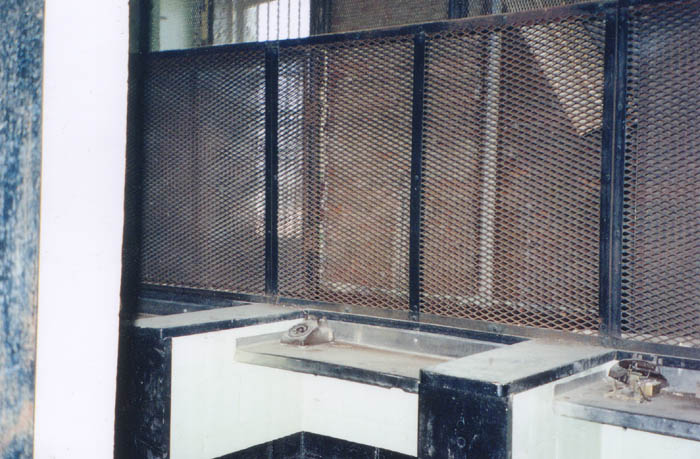
Of course I'd still like to get in there for one of the nighttime ghost hunts. They're far more common right before Halloween, but apparently they conduct them all through the spring and summer as well.
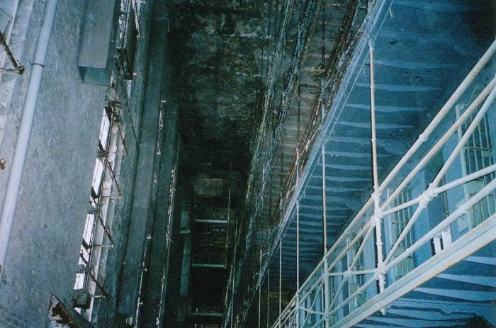
Tours are given between 1 and 4 PM on Sundays until October 31, when they close for the winter. Call (419) 522-2644 for details, or visit the official OSR Preservation Society web site.
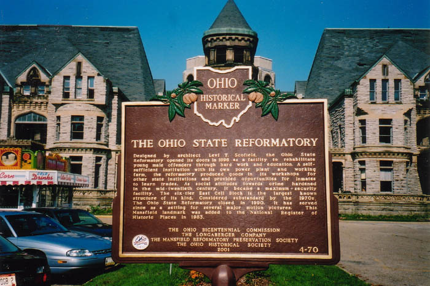
Mansfield Reformatory Preservation Society
Grave Addiction: Ohio State Reformatory
Mansfield News Journal article: "The Journey from OSR to ManCI"
Outlook Weekly article: "History, Hauntings, and Homosexuals"
Back
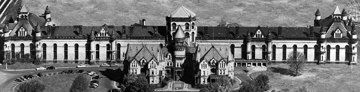
Sources
Futty, John. "Tale of Two Cities: The Journey from OSR to ManCI." Mansfield News Journal 9 Dec. 1990.